NUESTRO CALZADO

1Misión
Buscar la comodidad de nuestros clientes tanto en precio como en calidad de nuestro producto, sersiorando que el cliente siempre tiene la razón.
2Visión
Ser una marca reconocida a nivel nacional como internacional cumpliendo las expectativas de nuestros clientes.
El uso del calzado ortopédico es una forma más de tratamiento que el médico utiliza en su consulta diaria. Algunas veces para la corrección de deformaciones y otras para aliviar el dolor de los pies durante la marcha..
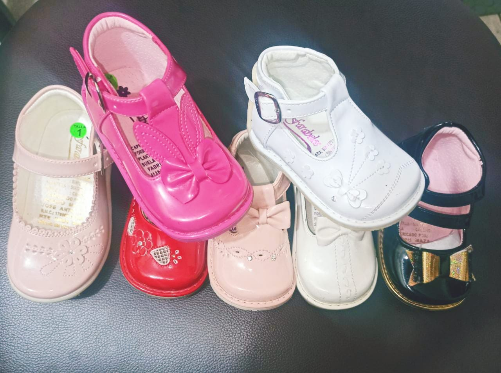CHAROL
Color Negro
El color negro es uno de los colores más presentes en el Tarot de Marsella. Está en los bordes de las cartas. Crea cartuchos para los nombres y números de los arcanos mayores.
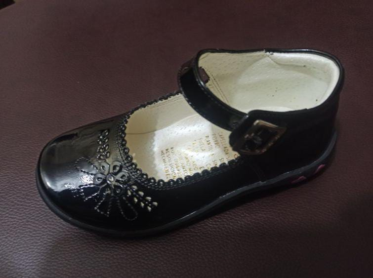Color Rojo
La Simbologia del Color Rojo del Tarot Rojo en el tarot es el instinto de superviviencia, el color rojo, caracteristico en la arcilla mineral de hierro, fué compañero del hombre desde tiempos prehistóricos, (utilizado en el arte rupestre).
Color Crema
La Simbologia del Color Crema Como una forma más suave y cálida del blanco, el color crema representa la simplicidad y la serenidad. A menudo se utiliza para denotar llanura. El crema es básico, sin pretensiones y no llama la atención.
Color Blanco
A menudo cuando el color Blanco se ve en las cartas del Tarot implica nuevos comienzos y nuevas ideas y oportunidades que vienen de un lugar más alto y plano.
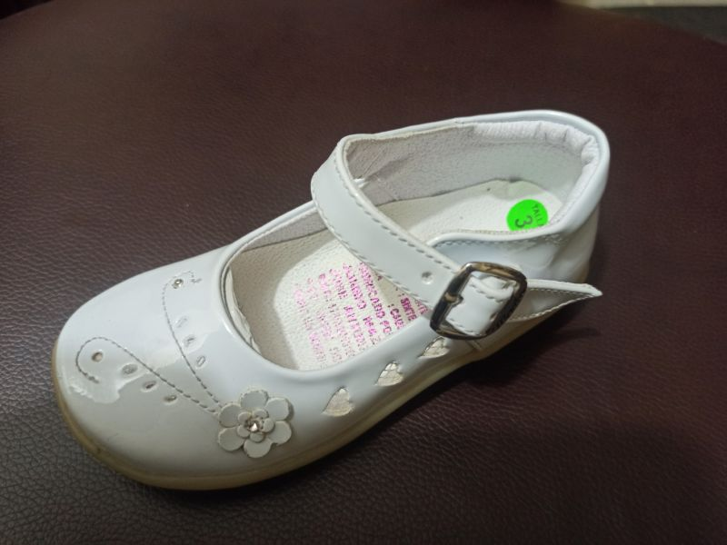Color Beisch
A menudo cuando el color Beisch Todo lo relacionado con este color sugiere neutralidad y alejamiento. Existe una ausencia de comunicación. Ver el significado e interpretacion de los sueños con otros colores.
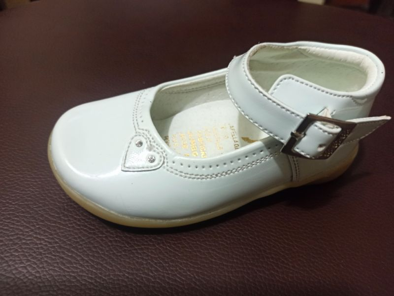CUERO
Deben tener la suela flexible El zapato debe ser flexible, es decir, los padres deben ser capaces de flexionarlos totalmente. Hay que evitar aquellos que tienen la suela dura y rígida, dado que no permitirán a los niños poder adaptar la pisada. También deben ser ligeros, un zapato pesado solo entorpecen la forma de andar del niño, invitándole a tropezar consigo mismo y a caerse. Mientras menos pese el calzado, mejor andará el niño con él.
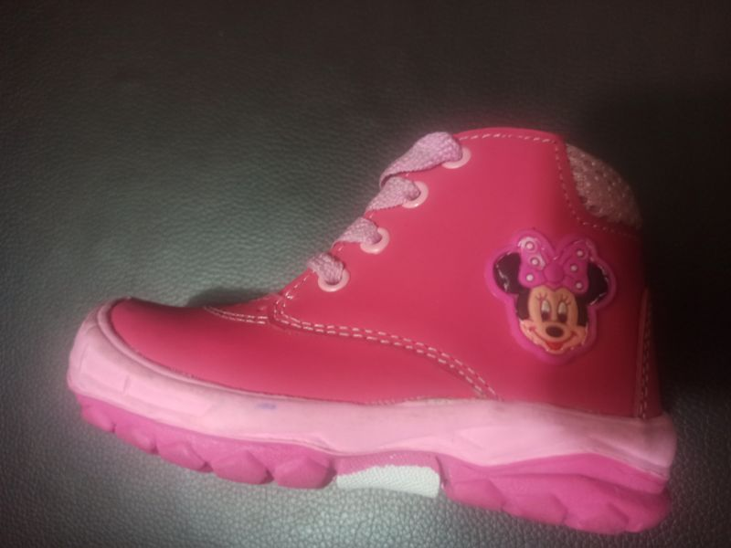 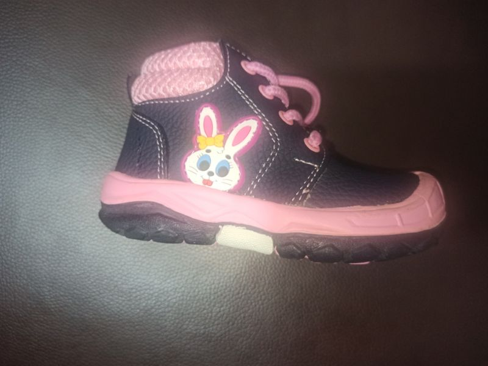 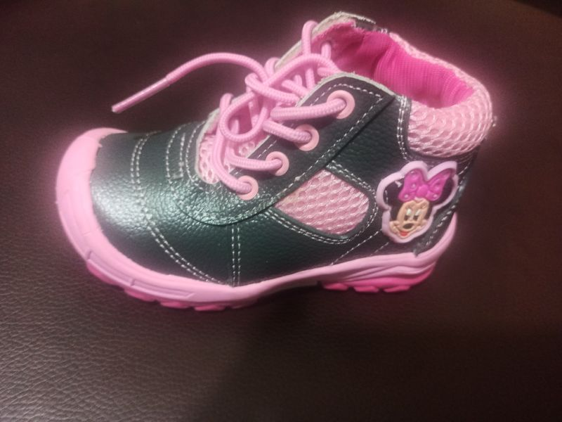BEBÉS
Cositas adorables
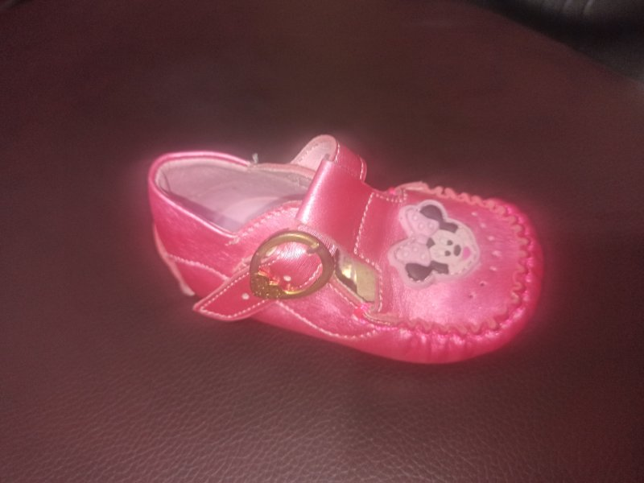 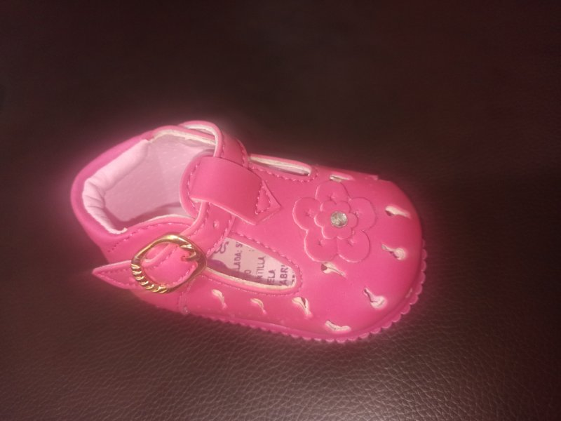 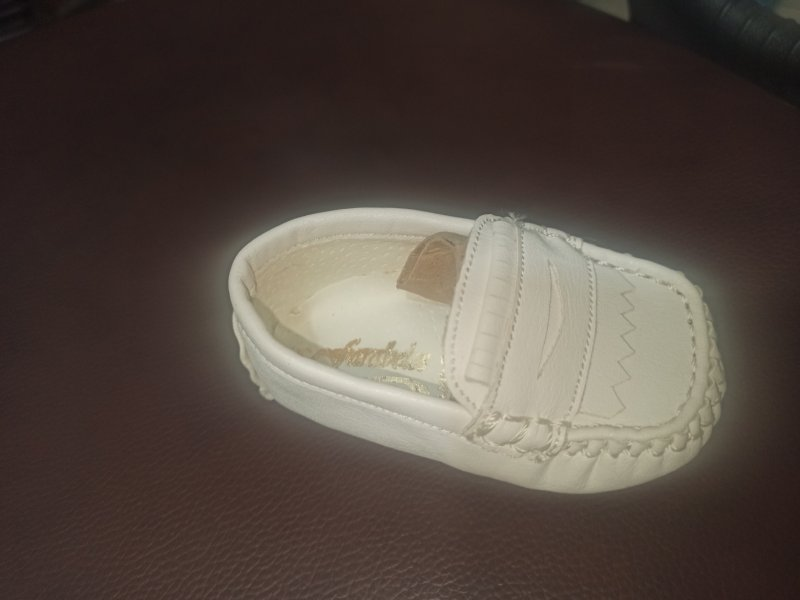 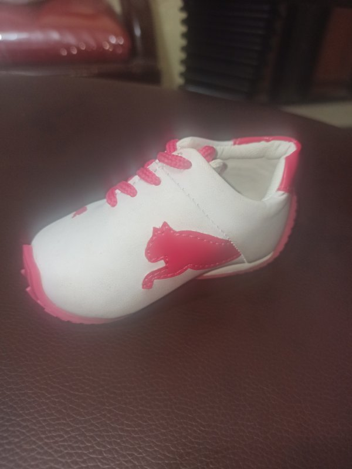 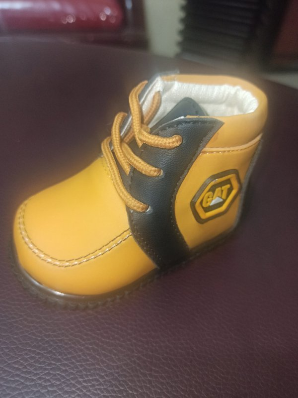